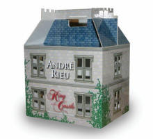

|
André Rieu - King Of His Castle
(Limited Edition) (2009)
|
 |
| Among André Rieu's many
claims to fame is the fact that he lives in a
castle, famous for, among other things the
kitchen where d'Artagnan had his last meal! It's
been the subject of many an interview and
features prominently on his DVD 'My Music, My
Life', and now this ultimate gift package, with
its design based on André's own castle, is
released to celebrate André's first ever New
Zealand tour. It features a collection of
best-selling DVDs -- nine single and one 2-DVD
set (eleven discs in total).
The collection includes his
best-selling Schönbrunn, Wonderland, Maastricht
and New York concerts, Christmas and New Year
concerts, beautifully-filmed clips ('Dreaming')
and a documentary ('A Fairy Tale'). |
Where to buy?
|
|
DVDs included
- New Year's Eve in Vienna
- Live in Maastricht II
- André in Wonderland
- La vie est belle
- New York Memories
- Dreaming
- André Rieu at Schönbrunn, Vienna
- A Fairy Tale
- André Rieu On Holiday (2DVD)
- Love Songs
|
|